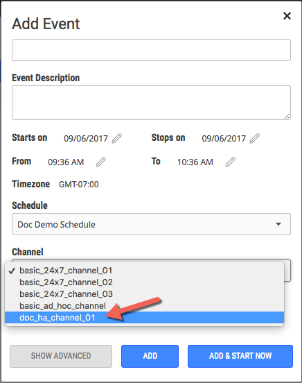
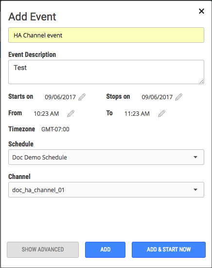
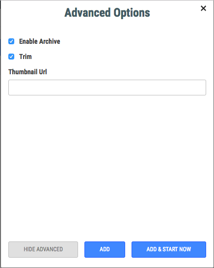
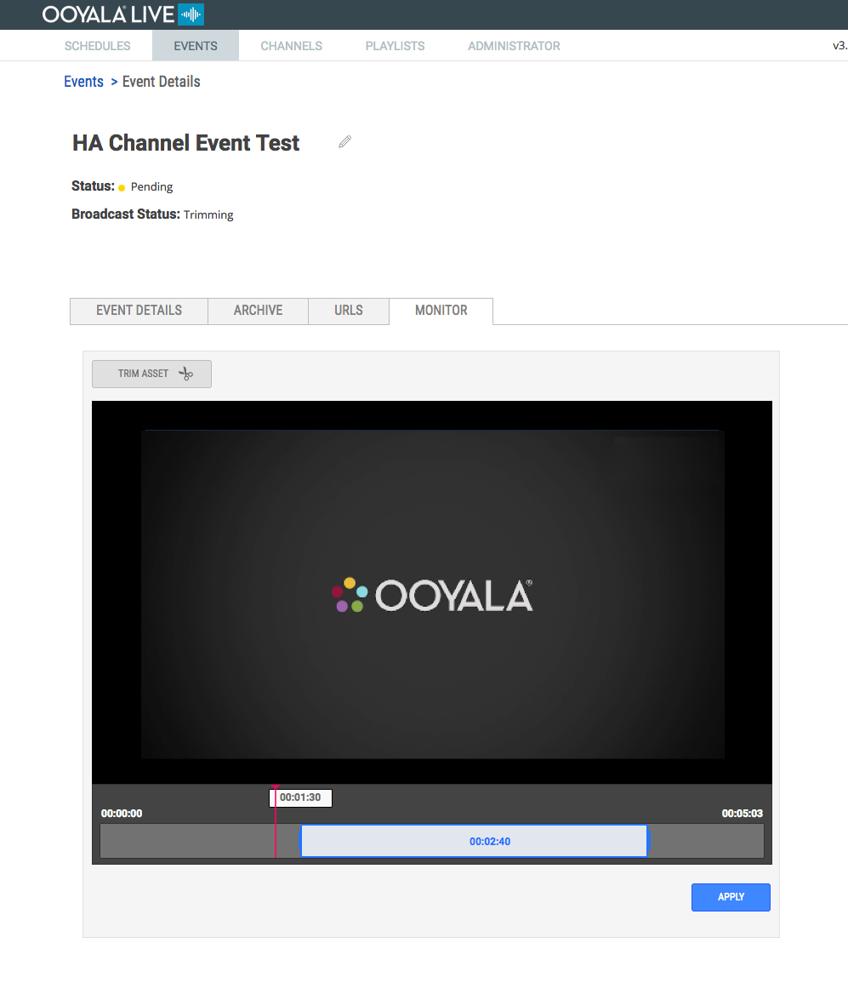

Events can be viewed as a remote asset for a limited amount of time, or events can be
saved as a VOD asset for rebroadcasting.
There are some unique considerations for creating events on an HA channel.
Tip: The Embed Code for an archived Ooyala
Live Event is equivalent to the Ooyala Backlot asset's Content
ID.
-
Log in to Ooyala Live and go to the EVENTS tab.
-
Click ADD EVENT.
-
Select the HA channel.

-
Enter a name for the event, a description, and set the date and time of the
event.

-
Click SHOW ADVANCED.
-
Click Trim to enable manual trimming of the event.

-
Click ADD.
You have a limited time to manually trim an event before it is automatically trimmed
by Ooyala Live. When the event Status is Pending and
the Broadcast Status is Trimming, you can manually
trim the event from the EVENTS
MONITOR page.
Go to the MONITOR page for the event your want to trim.

- Click TRIM ASSET.
- Drag the ends of the blue box to select the portion of the event you want to
save.
- Click APPLY.
Ooyala Live transcodes and uploads the selected video as an asset in the Backlot
account associated with the Live account.